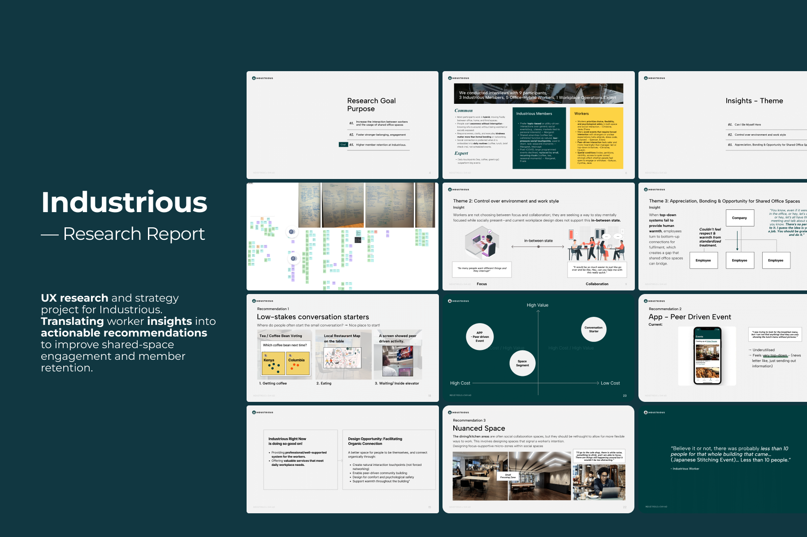
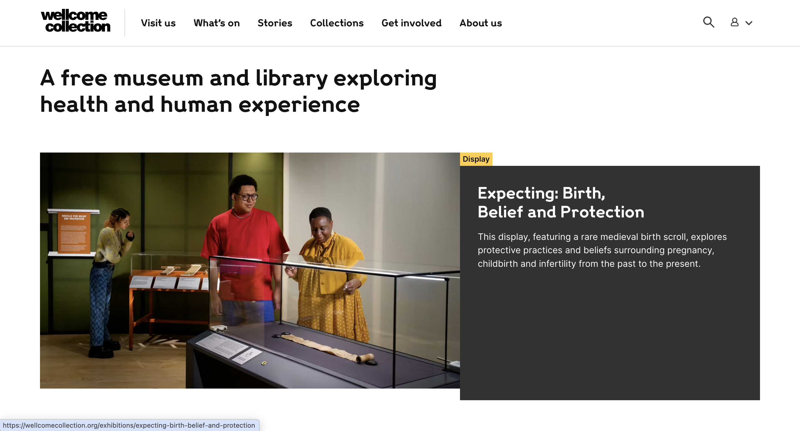
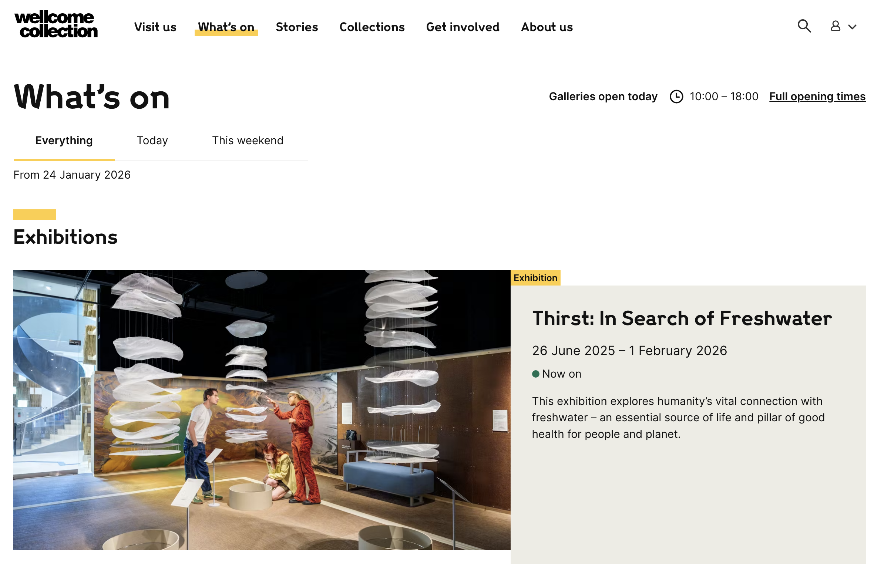
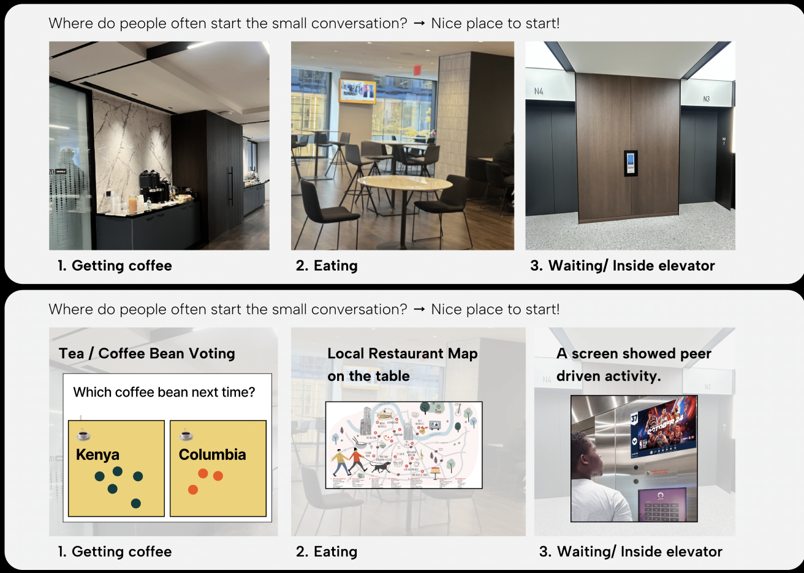
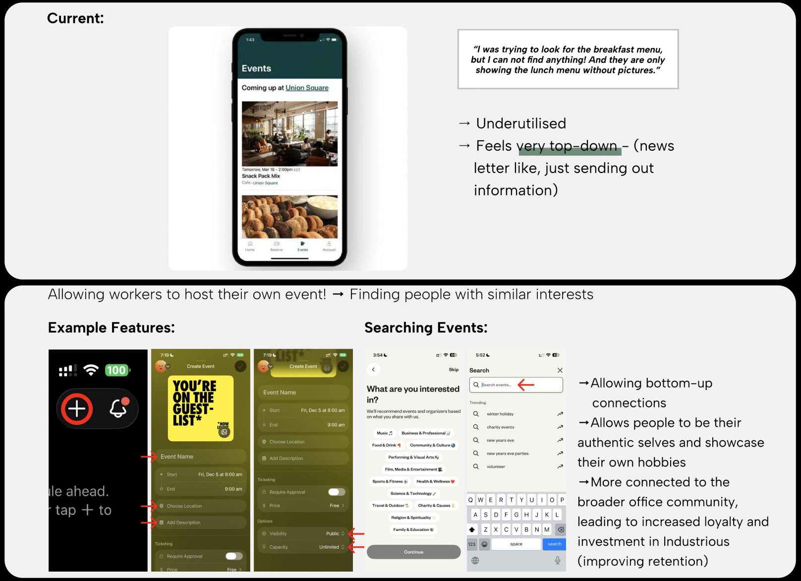
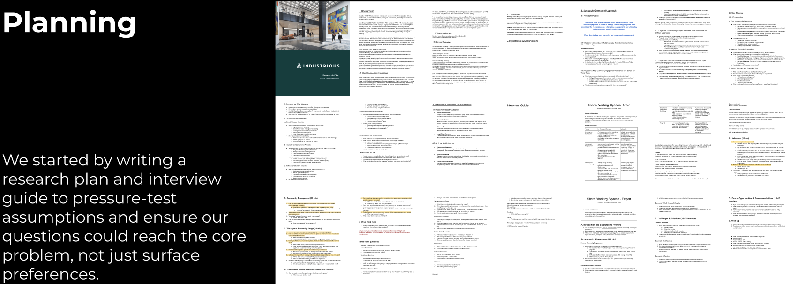
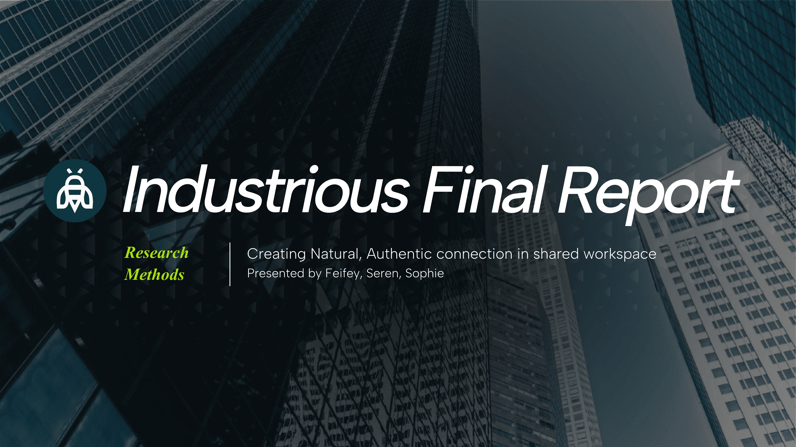

Industrious
— Research Report
UX research and strategy project for Industrious. Translating worker insights into actionable recommendations to improve shared-space engagement and member retention.

My Contribution
Built the research plan and ran data collection end-to-end, including recruiting and interviewing 9 participants (hybrid workers, and a workplace ops expert).
Led analysis and synthesis using affinity mapping + pattern recognition, translating interview findings into 3 core insight themes that anchored the final narrative and recommendations.
Delivered a final pitch to Industrious (including leadership joining), presenting prioritised recommendations to support natural, authentic connection in shared workspaces.
About Industrious
Industrious is a workplace experience company operating flexible offices and co-working spaces, combining hospitality-led service with shared environments. Their spaces include private offices and shared areas like cafés, lounges, meeting rooms, and member programming.
What are the client needs?
Increase shared-space engagement and meaningful interaction in a way that strengthens belonging and perceived value, because shared spaces directly shape satisfaction, return behaviour, and long-term retention.
The Challenge
Industrious offers thoughtfully designed shared spaces and community programming, but attendance and shared-space usage can be inconsistent. Instead of assuming the fix was "more events," the team needed evidence on what truly drives engagement and what makes people opt out.
Margaret Wiltshire (Industrious Worker)
"Believe it or not, there was probably less than 10 people for that whole building that came... (Japanese Stitching Event)... Less than 10 people."
Learning Goals
Industrious already collects tenant feedback (NPS + open-ended responses every ~90 days), but the challenge is turning that data into focused, actionable direction.
So we framed the work around what actually makes people show up — and what "community" should mean in a shared office building.
We aligned on four focus areas:
1) Motivation to show up
2) Engagement and Community preferences
3) Hospitality, Care, and belonging
4) Value of amenities + Experience strategy
Planning
We started by writing a research plan and interview guide to pressure-test assumptions and ensure our questions could reach the core problem, not just surface preferences.

Research Approach
We interviewed 9 participants across three perspectives (Industrious members, hybrid office workers, and a workplace operations expert), converted interviews into user snapshots, then used affinity mapping to identify three core themes.

Affinity outcomes: shared themes + differences across groups
Across 9 interviews, we found three themes repeated across members, hybrid workers, and an operations expert, revealing clear opportunities for Industrious to support connection without forcing it.
01
Can I Be Myself Here?
Insight
People avoid office events not because they don't want connection, but because they don't want to perform. Networking-style formats create pressure and uncertainty.
Opportunity
Design connection that feels authentic by default: Activity-based, Low-pressure, Expectation-clear
02
Control Over Environment & Work Style
Insight
People aren't choosing between focus and collaboration—they're trying to stay focused while socially present. Most workplaces don't support this "in-between" mode.
Opportunity
Create a spectrum of spaces + lightweight signals that help people shift modes: Non-verbal, Socially acceptable, Easy to adopt
03
Appreciation & Bonding, the role of Shared Offices
Insight
When top-down systems feel cold, people rely on bottom-up relationships for support and motivation—creating a gap shared office spaces can uniquely bridge.
Opportunity
Enable small, recurring moments of warmth: Rituals, Peer-led touch points, Community behaviours that don't feel forced
We translated each theme into a recommendation Industrious can act on.
01 Low-stakes conversation starters
Add micro-prompts at everyday touch points to enable low-pressure conversation.

What Changes
Small prompts where people already pause (coffee bar / kitchen / elevator screen)
Why it works
- Starts with a shared object/topic → reduces awkward "contextless small talk"
- Interaction is optional + people can stay themselves
Signals of success
- % participation (votes/tokens)
- "Felt natural" sentiment
- More repeat attendance at casual moments
02 App: peer-driven events (shift from broadcast → enablement)
Shift the app from broadcast to enablement so members can host and join peer-led events.

What Changes
- "Host an event" flow + interest tags + lightweight RSVP
- Optional "host kit" from Industrious (space, time slot, simple guidelines)
Why it works
- Bottom-up connection feels more authentic than top-down programming
- Makes it easy to find "my people" without performing
Signals of success
- Member-hosted events/month
- RSVP + attendance rate
- Retention proxy: repeat visits / renewal intent
03 Nuanced space (focus micro-zones inside social areas)
Design focus micro-zones inside social areas so people can 'be around others' without social demand.

What Changes
- Add "focus micro-zones" within social areas (seat type + light/ acoustic cues)
- Simple "status signals" that are socially acceptable (table signage / subtle markers)
Why it works
- Supports "ambient presence" — workers who want energy but not interaction
- Reduces interruptions without making the space feel anti-social
Signals of success
- Reported interruptions ↓
- Utilisation of micro-zones
- Member satisfaction with "control over environment"
Deliverables
Final pitch presented to Industrious stakeholders (President + CPO + Workplace Experience team).

Supporting Materials
Full insights report, research plan + interview guide, and working board/research archive available on request.
Request access via email ↗Next step for Industrious
My Takeaways
The biggest quality jump came from treating the guide like a hypothesis test: define what must be true/false, then write questions that force clarity. It reduces vague answers and makes synthesis cleaner.
In affinity mapping, I learned to tag notes as claims vs behaviours. Most actionable insights came from behaviour patterns, not opinions.
Frame insights as: what changes → why it works → what success looks like. That structure turns insights into testable interventions, makes stakeholder buy-in easier, and sets up clear next steps.